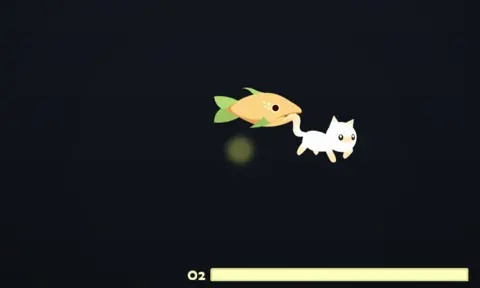
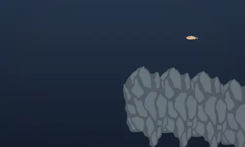
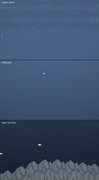

Endless Ocean (Preview)
Version 0.1.0
What it does
Endless Ocean adds a long stretch of seeded seafloor east of NewWorld. Take the final vanilla boat past the old eastern limit to fish three depth bands populated by familiar species. Returning to an unloaded stretch regenerates its terrain and fish.
Controls
- Take the final vanilla boat east. To choose a layout, set
seedin the recipe before building, or edit[World] seedin the generated INI while the game is closed.
Gallery










Technical datasheet
| Package type | Recipe |
|---|---|
| Manifest file | jamm-recipe.json |
| Generator | endless-ocean |
| APIs used | JAMM chunk layout and streaming scripts, GameMaker instance and collision APIs, legacy Boat7, Fish and save events, and Catalog API lookup when installed. |
| Assets and scripts added | 1 NewWorld controller object, 0 sprites and 7 standalone scripts. The recipe adds 5 controller events and patches 2 SaveManager events. |
| Save-file behaviour | The seed is the only generated-world state saved. jamm_endless_ocean.ini stores it under [World] as seed, shared by all slots in that save directory. Transient fish instance IDs are excluded from [Fishes]. Normal catches, quests and Fishalog progress still use the game's save system. |
| Compatibility | Targets the August 2023 legacy VM archive or a compatible merged archive. For a pack, build the profile first and use that verified archive as the recipe base. The repository reports an in-game run with Antiquity, PWB, Abyss, Colour and Verdant. An existing Endless Ocean controller or colliding chunk script names prevent a second installation. |
How it works
The generator starts at or beyond x = 170,000, the input room's width and the horizontal extents of placed sprites and masks. It then extends NewWorld by 488 chunks of 2,048 pixels each. Only the final vanilla boat, Boat7, gets the extended range, stopping 400 pixels before the new east edge.
Seeded value noise at two frequencies samples one continuous floor profile across chunk boundaries. Each chunk places four collidable CaveRockBig instances. Three candidate fish slots select between Celad and Inno in the upper band, Mustardfish and Elder Mustardfish in the middle band, and Dijon and Garm near the floor. A live collision check can veto each placement.
The controller keeps the camera's current chunk and two on each side, for up to 20 rocks and 15 fish owned by a full streaming window. It releases old chunks as the camera moves. Fish hooked, in the net or aboard can outlive their chunk until vanilla finishes the interaction. Revisiting an unloaded chunk rebuilds its initial layout from the seed.
The recipe supplies 271828 as the default seed. On the first visit the controller writes the seed to the INI. The generator guards the native primary and backup SaveManager writes so the streamed fish's transient IDs do not enter the per-instance fish state.
Files in the package
README.mdjamm-recipe.json